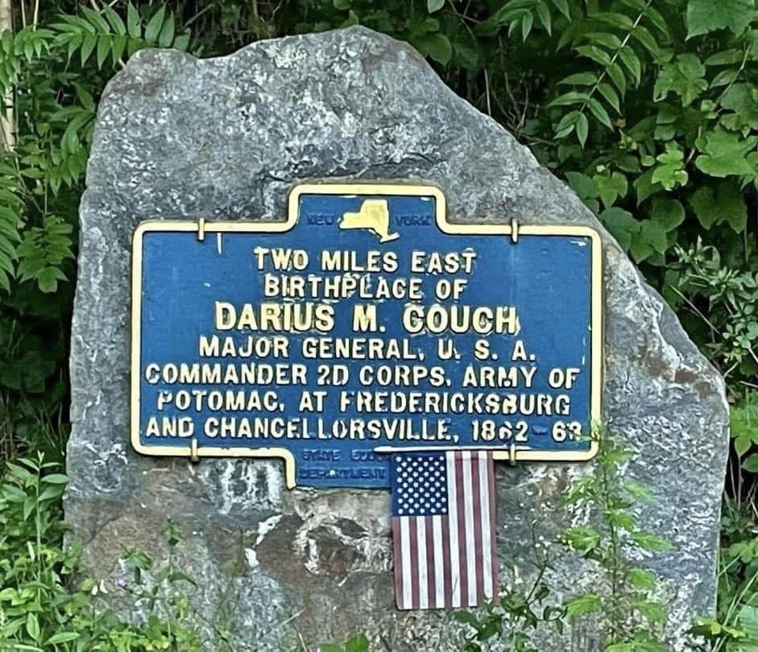
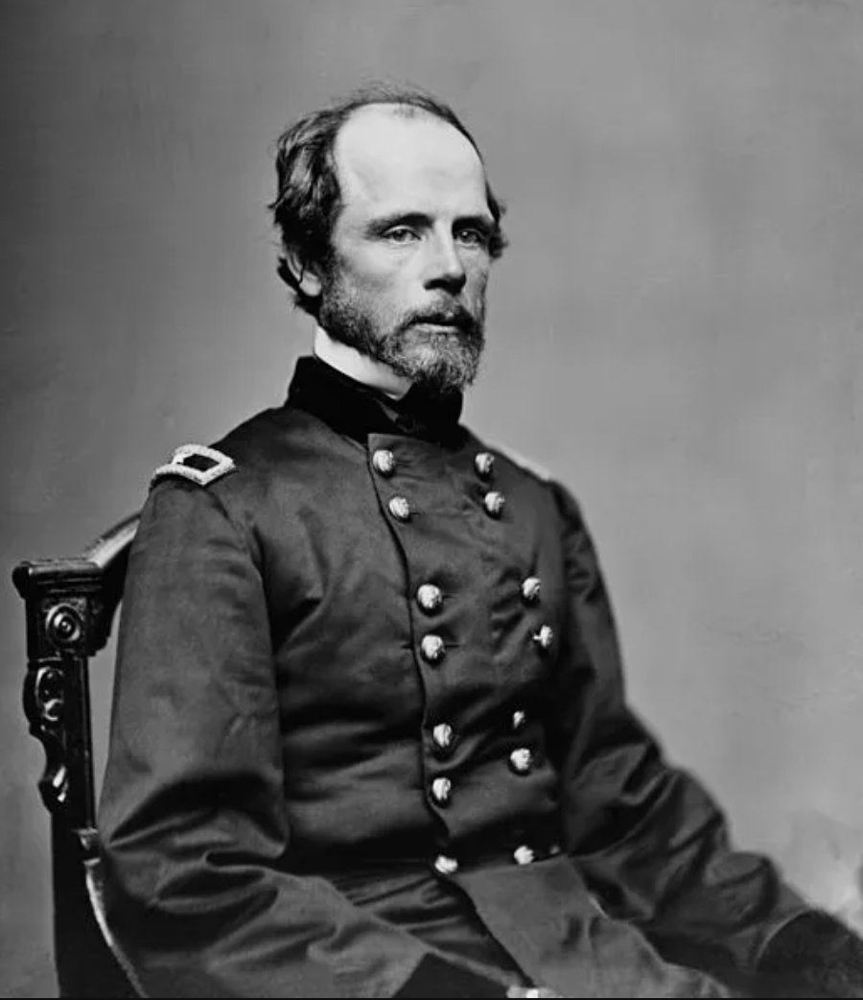
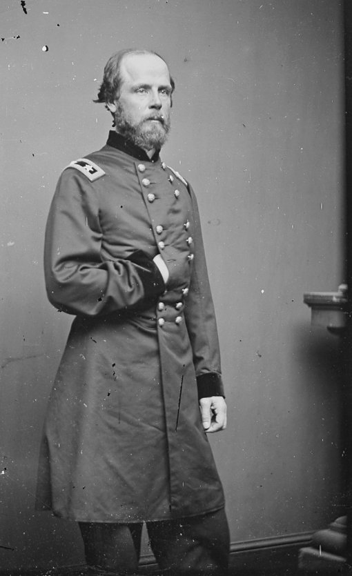

Darius Couch
A directional marker pointing toward the birthplace of a Civil War Major General.

TWO MILES EAST
Birthplace of
DARIUS M. COUCH
Major General, U.S.A.
Commander 2d Corps, Army of
Potomac, at Fredericksburg
and Chancellorsville, 1862–63


About this Marker
Darius Nash Couch (1822–1897) was born on July 23, 1822, on a farm in the village of Southeast in Putnam County, the son of Jonathan Couch and Elizabeth Hall. His paternal grandfather, Thomas Couch, had served in the American Revolution as a Sergeant and Quartermaster in Connecticut — the basis on which Couch would later, in 1890, join the Sons of the American Revolution. He was educated at the local Southeast schools, entered the United States Military Academy at West Point in 1842, and graduated four years later, 13th out of 59 cadets. His West Point classmates included George B. McClellan, Thomas “Stonewall” Jackson, George Pickett, George Stoneman, and Jesse Reno — the Class of 1846 would produce some of the most prominent generals on both sides of the coming war. (The marker gives his middle initial as “M.,” but his name was Darius Nash Couch; the most authoritative sources, including Couch’s own biographers and his family, use the “N.” or “Nash.”)
Couch saw action in the Mexican–American War, distinguishing himself at the Battle of Buena Vista in February 1847, and was brevetted first lieutenant for “gallant and meritorious conduct.” In 1853 he took a one-year leave of absence from the army to conduct a scientific expedition to northern Mexico on behalf of the Smithsonian Institution — a mission that resulted in his discovery of two species that bear his name: Couch’s kingbird (a flycatcher) and Couch’s spadefoot toad. Three reptile species and a fish would later be named for him as well. On August 31, 1854 he married Mary Caroline Crocker of Taunton, Massachusetts, daughter of Hon. Samuel L. Crocker, a Taunton congressman and businessman. Couch resigned from the army in 1855 and was working in his wife’s family copper-fabricating business in Taunton when the Civil War began.
Recommissioned in June 1861 as colonel of the 7th Massachusetts Infantry, Couch rose rapidly: brigadier general (August 1861), major general (July 1862), and on November 14, 1862, command of the II Corps of the Army of the Potomac. He led the II Corps during the disastrous Union assault at Fredericksburg the following month. Couch vehemently opposed the attack on Marye’s Heights, warning his superiors that it would be repulsed with heavy losses; Major General Ambrose Burnside insisted that II Corps move forward anyway. From an elevated vantage in the town — remembered in some accounts as the cupola of the courthouse, in others as a church steeple — Couch watched wave after wave of his men cut down attempting to take the wall. According to a contemporary account, he said as he watched: “Oh, great God! See how our men, our poor fellows, are falling.” At one point in the action, in a gesture recorded in A. M. Gambone’s biography Enigmatic Valor, Couch rode forward to within roughly fifty yards of the Confederate position and then turned his horse to ride parallel to the line — an act of conspicuous valor that, on a field where every Union officer in range was a target, somehow drew no fire. His prediction proved exactly accurate: the II Corps sustained over 4,000 casualties in the campaign.
At Chancellorsville the following May, Couch was the senior corps commander and Joseph Hooker’s second-in-command. On May 3, 1863, a Confederate cannonball struck the pillar of the Chancellor House that Hooker was leaning against, knocking him unconscious and almost certainly leaving him concussed. With the Union army still holding favorable ground, Couch’s fellow corps commanders — including Hancock, Sykes, and Warren — urged him to assume command from the incapacitated Hooker, and even to disobey Hooker’s order to withdraw. Couch, unconvinced that Hooker was medically unfit, declined to wrest authority from his commander, and the retreat went forward. After the defeat, Couch sent Lincoln a letter asking to be relieved of duty under Hooker and travelled to Washington to speak with the president in person. Lincoln offered Couch command of the Army of the Potomac itself; Couch declined, citing poor health, and recommended George Gordon Meade — the man who, just days later, would assume command on the eve of Gettysburg.
Couch took command of the newly created Department of the Susquehanna on June 9, 1863, and quickly organized largely emergency militia units to oppose Lee’s invasion of Pennsylvania. He directed fortifications around Harrisburg and dispatched men to slow the Confederate advance — skirmishing with Lt. Gen. Richard Ewell’s forces at Sporting Hill and with Maj. Gen. J.E.B. Stuart’s cavalry at Carlisle. During the rapid Confederate advance into southern Pennsylvania in late June, Stuart’s ride around the Union army had severed most lines of communication between the federal forces and Washington; the timely intelligence on Confederate troop movements that Lincoln and Stanton received in those critical days came largely from Couch’s headquarters. Lee, by contrast, was operating blind. Couch’s men helped ensure that Confederate forces stayed on the west bank of the Susquehanna in the days before Gettysburg, and joined the pursuit of Lee’s army back into Maryland after the battle. Fort Couch, in what is now Lemoyne, Pennsylvania, was built under his direction and named for him.
On November 18, 1863, Couch was at the Gettysburg train station to greet President Lincoln on his arrival for the dedication of the Soldiers’ National Cemetery. The next day he was seated on the speakers’ platform near the president for the delivery of the Gettysburg Address. In December 1864 Couch returned to front-line command, leading a division in Maj. Gen. John Schofield’s XXIII Corps attached to Maj. Gen. George H. Thomas’s Army of the Cumberland. He fought at the Battle of Nashville on December 15–16, 1864, where his men helped shatter the Confederate left flank, and saw the war out through the Carolinas campaign.
After the war Couch returned to Taunton, ran unsuccessfully for Governor of Massachusetts (1865) on the Democratic ticket, and was named Collector of Customs for the Port of Boston in 1866 — though the Senate declined to confirm his appointment and he held the post only briefly. In 1867 he became president of the (West) Virginia Mining and Manufacturing Company. He later relocated to Connecticut, where he served as Quartermaster General and then Adjutant General of the state militia from 1871 until 1884. He died in Norwalk, Connecticut on February 12, 1897, and is buried at Mount Pleasant Cemetery in Taunton, Massachusetts.
Where, exactly, the marker points
The marker stands at NYS Route 22 and directs the visitor “two miles east” — an approximation, and one that under-reports the slightly northeasterly bearing of the farm. In a 2013 guest column for the local site Adventures Around Putnam, Carmel resident Robert Bredow identified the birthplace as the farm shown on the 1854 map of Putnam County as the holding of C. H. Couch — the general’s brother, to whom Darius sold his half of the property in 1850. Bredow places the site “about a half mile east of the Red Rooster on Rte. 22.” Bredow drew his account from A. M. Gambone’s biography Enigmatic Valor and from an interview with one of Couch’s great-granddaughters. We have not independently verified the 1854 map identification with primary sources, but the family-geography Bredow describes is consistent with the wider record: Couch’s uncle Hezekiah lived on what is still called Couch Road in Patterson, the family attended a private prep school at what is now the North Salem Town Hall, and a Couch family plot remains in the Milltown Cemetery in Brewster. The next time you pass the marker, picture a boy in the 1830s playing along the banks of the Croton River, a half mile east through the trees — and consider what an unlikely path it was from there to a chair beside Lincoln at Gettysburg.
(birthplace farm is two miles east)
Town of Southeast, NY
(41.402217°, −73.586250°)
Sources
- On-site photograph of the New York State Education Department marker.
- Portrait photographs: Mathew Brady studio, c. 1862–65, from the Brady-Handy Photograph Collection, Library of Congress (public domain). Two poses, presented unrestored.
- Robert Bredow, “Major General Darius Couch of Southeast — Have We Forgotten?,” guest column at Adventures Around Putnam (Steven Mattson, ed.), November 7, 2013 — primary source for the birthplace identification at the C. H. Couch farm shown on the 1854 map of Putnam County, the Fredericksburg ride parallel to the Confederate line, the Chancellor House pillar / Hooker concussion detail, the recommendation of Meade, the Department of the Susquehanna intelligence role during the Gettysburg campaign, and Couch’s November 18, 1863 greeting of Lincoln at the Gettysburg train station. Bredow credits A. M. Gambone’s Major-General Darius Nash Couch: Enigmatic Valor (Butternut and Blue, 2000) and a personal interview with one of Couch’s great-granddaughters.
- Darius N. Couch — Wikipedia article (consolidating standard Civil War biographical sources including Eicher’s The Longest Night, Warner’s Generals in Blue, Gambone’s Major-General Darius Nash Couch: Enigmatic Valor, and the Heidlers’ Encyclopedia of the American Civil War).
- Kennedy Hickman, “American Civil War: Major General Darius N. Couch,” ThoughtCo — primary source for the West Point Class of 1846 classmates, Couch’s opposition to Burnside’s order at Fredericksburg, the Carlisle skirmish with J.E.B. Stuart, and the Senate’s non-confirmation of his Boston Customs appointment.
- Aztec Club of 1847 biographical sketch of Couch.
- Taunton Daily Gazette, “Who Lies Here: Major General Darius Nash Couch” (March 6, 2012) — primary source for family details: parents Jonathan Couch and Elizabeth Hall; marriage to Mary Caroline Crocker (August 31, 1854); grandfather Thomas Couch’s Revolutionary War service that established Couch’s SAR membership.